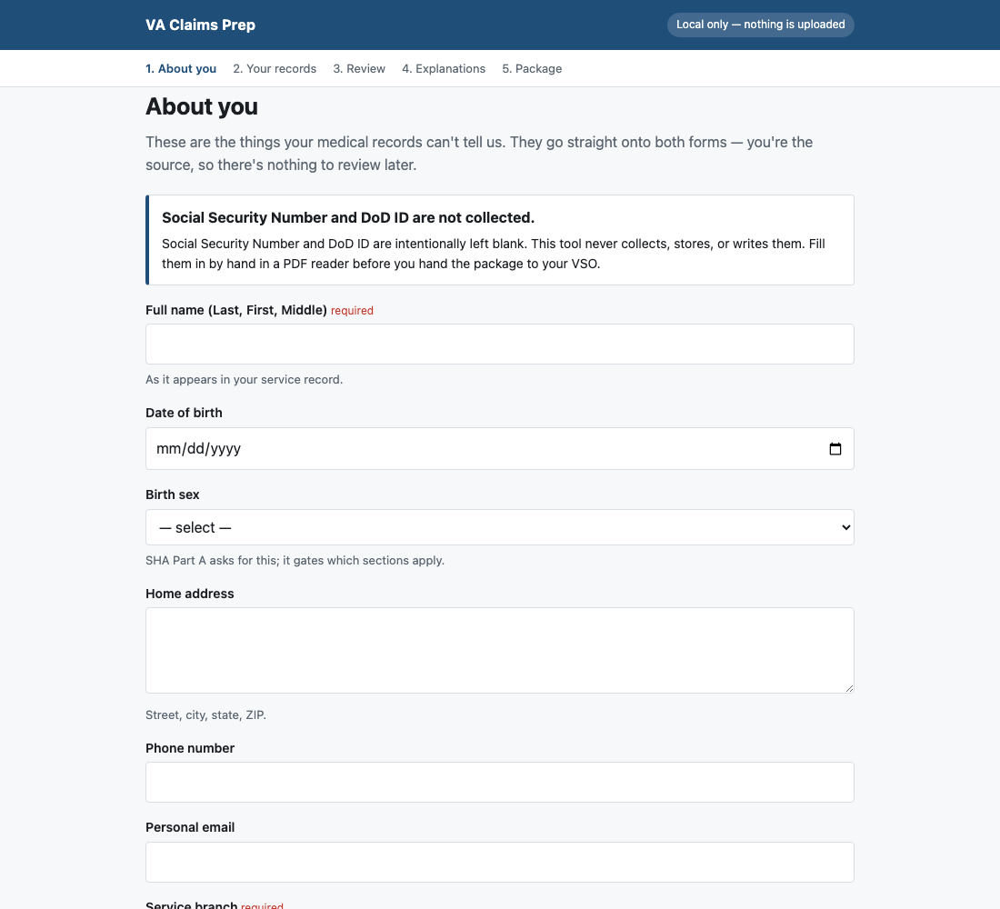
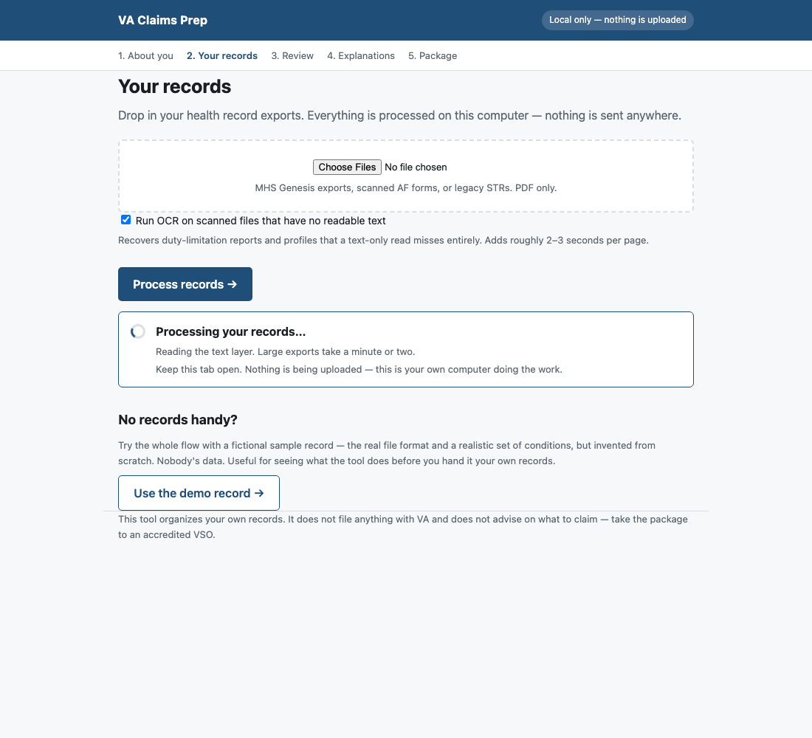
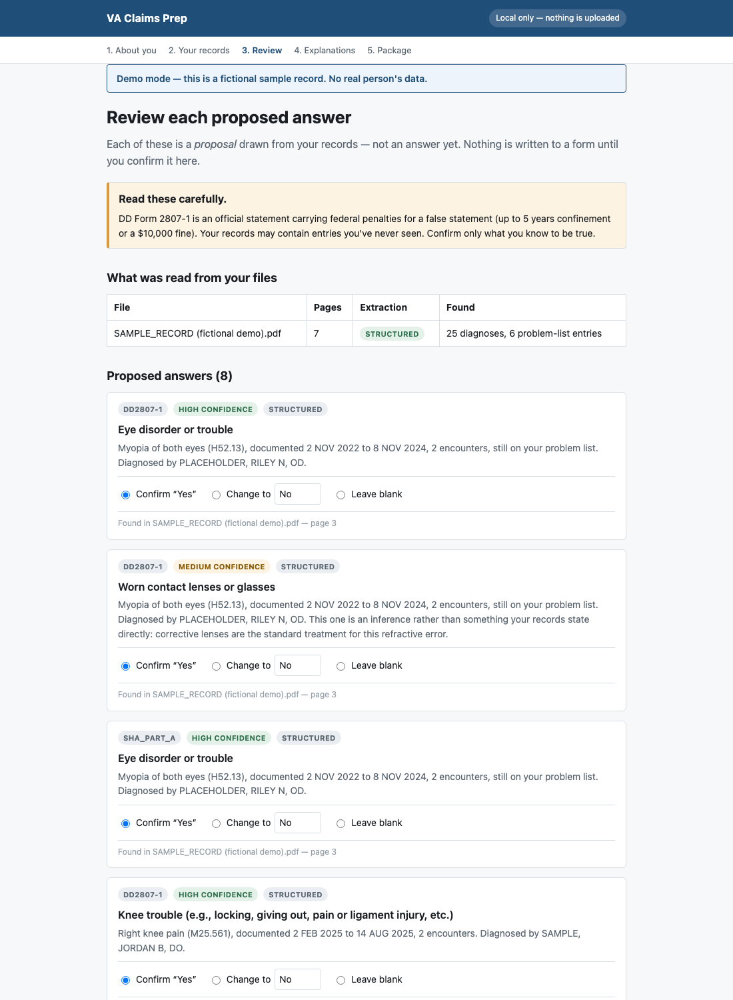
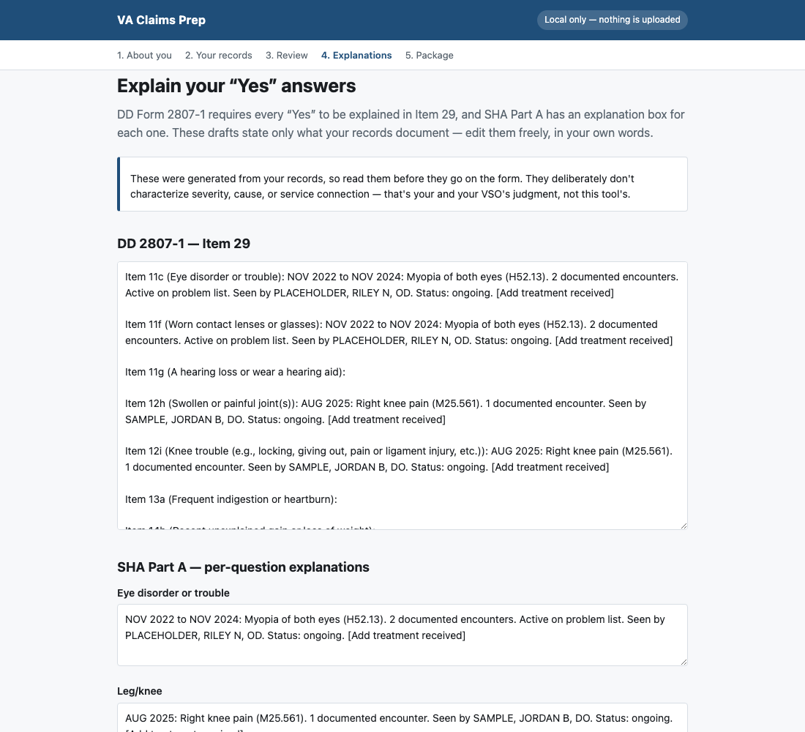
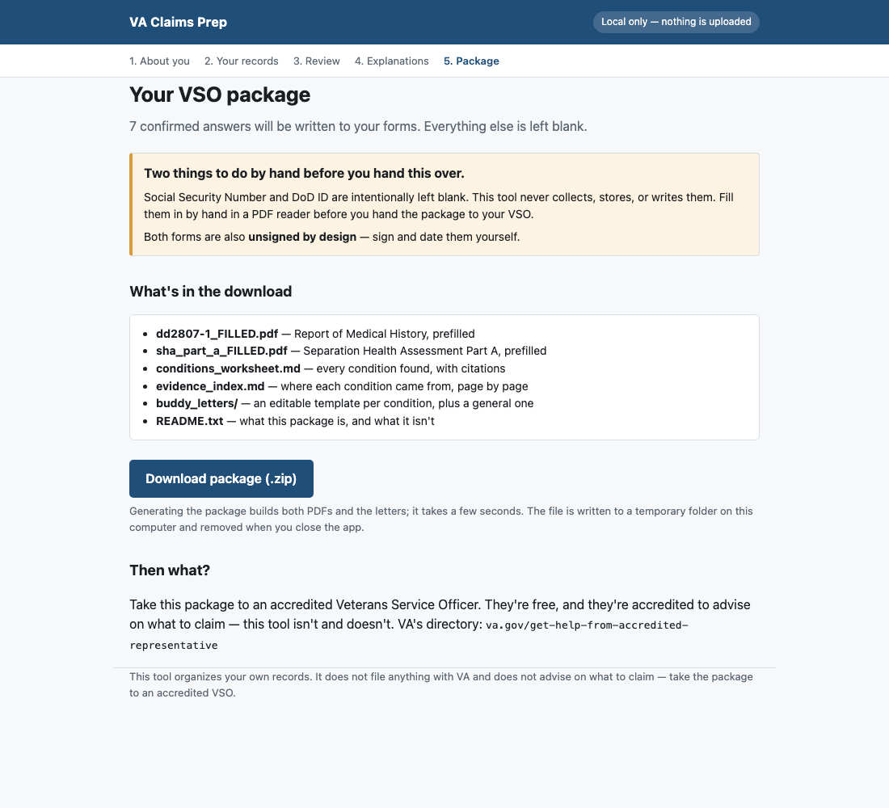

Turn your own military health records into a prepared package for your appointment with a Veterans Service Officer.
It reads your health record export, finds the conditions documented in it, and fills in as much of DD Form 2807-1 and the SHA Part A self-assessment as the evidence honestly supports — showing you the condition, the doctor who diagnosed it, and the page it came from for every single answer.
Then it asks you to confirm each one. Nothing is written to a form you haven't approved.
Get it on GitHub Install instructions




Requires a Mac or Linux machine with Python 3.9+. OCR of scanned records currently needs macOS.
git clone https://github.com/obtill199/va-claims-prep.git cd va-claims-prep ./setup.sh ./run_app.sh
Then open http://127.0.0.1:5000 in your browser.
Because using it means handing over your Social Security Number, DoD ID and complete medical history. A hosted version would put all of that on somebody else's server. Running it on your own machine means there is no server, no account, no upload, and nothing to breach. The install is four lines; that is the trade.
Measured against a real, completed DD 2807-1 with 32 "Yes" answers:
| Count | Correct | |
|---|---|---|
| Proposed and pre-checked | 11 | 11 |
| Proposed, left blank by default | 21 | 20 |
| Never surfaced | 1 | — |
31 of 32 real answers were surfaced, and the tier that pre-checks boxes hasn't produced a wrong answer yet. Weaker matches — words appearing near a question, with no diagnosis behind them — are shown with page numbers but start unchecked, because one of those 21 was wrong and defaulting to blank is what keeps it off your form.